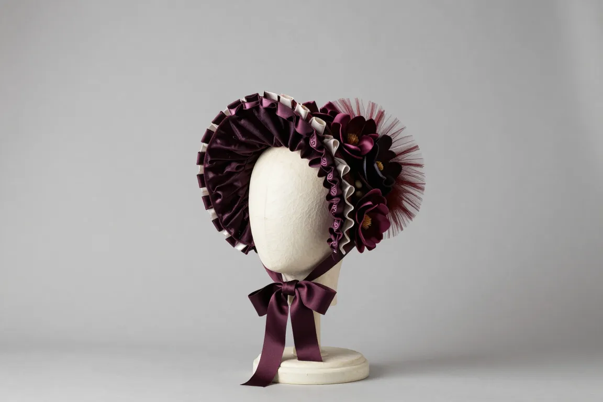

мода · 1840–1900 · также: Викторианские шляпы и чепцы, Капор и отделанная шляпа
Женские шляпы и чепцы царствования королевы Виктории. Проволочный каркас с бакрамом нёс шёлк, бархат, фетр или солому и отделывался вручную лентой, цветами и перьями. Форма следовала платью, от глубокого капора до маленькой шляпки набок.

Главная идея
Шляпа завершает платье дамы, а отделка показывает мастерство модистки.
Принципы дизайна
Стройте форму на проволочном каркасе с бакрамом, затем обтягивайте тканью, скроенной по косой.
В 1840-х делайте поля капора глубиной 8–12 см, чтобы лицо смотрело из туннеля.
К 1860-м уменьшайте капор до маленькой шляпки на затылке по мере того, как причёска поднимается.
Завязывайте ленты под подбородком шёлковым бантом шириной 4–6 см.
Собирайте отделку с одной стороны или спереди: цветы, петли ленты, плюмаж или птица.
Подбирайте ткань отделки к платью владелицы.
Берите фетр на зиму, шёлк на вечер и плетёную солому на лето.